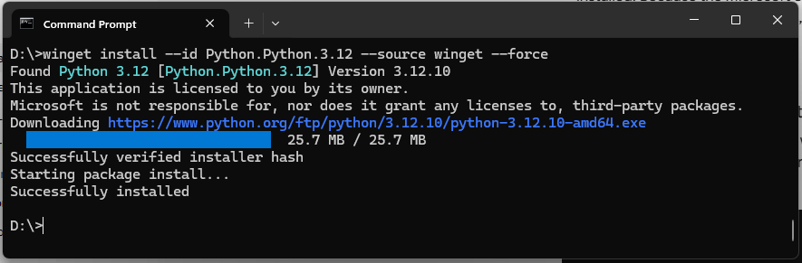

Installatie Python en Visual Code
Installatie Python
Waarschuwing
De opdrachten in deze workshop werken alleen met versie 3.12 van Python.
Open een windows console of PowerShell en voer het volgende commando uit om Python te installeren:
winget install --id Python.Python.3.12 --source winget --force

Download de versie 3.12 van Python van af de Python-website. Voer de installatie uit!
Let op:
Vink “Add Python to PATH” aan (belangrijk!)
Onthoud de installatie-locatie

Installatie Visual Code
Visual Code is een Integrated Development Environment om eenvoudig Python programma’s te ontwikkelen. Download de laatste versie van Visual Code van af de Visual Code-website Voer de installatie uit!
Waarschuwing
Belangrijk Visual Code moet correct worden geïnstalleerd om Python-programma’s te kunnen ontwikkelen.
Installatie Visual Code-extensie voor Python
Installeer in Visual Code de Python-extensie om eenvoudig Python-programma’s te kunnen ontwikkelen.
Ga naar de extensies-sectie in Visual Code, zoek naar “Python” en klik op “Installeren”.